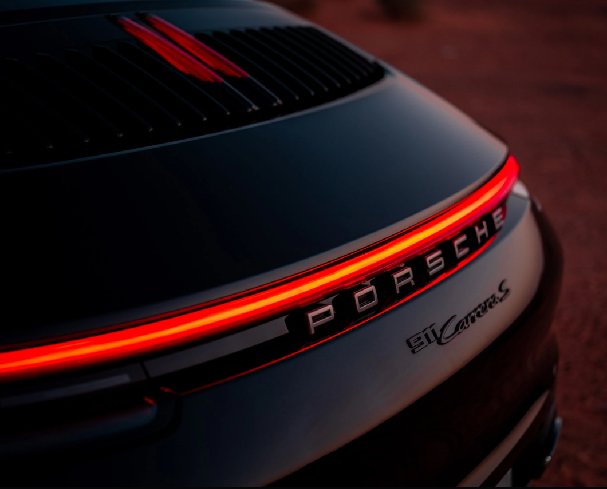
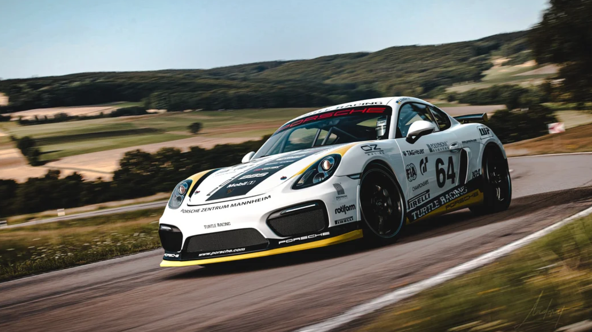
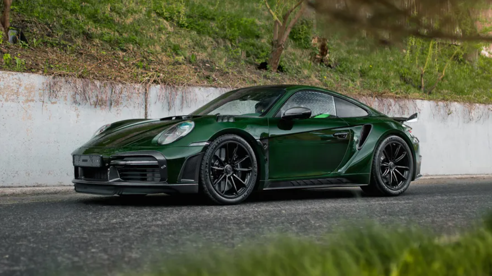

A Symbol of Power, Design, and Innovation
Porsche, one of the world’s most renowned automotive brands, has built its reputation by combining advanced technology, stunning design, and exceptional performance in its luxury and sports cars. Founded in 1931, this German brand has established a unique place in the automotive industry, admired globally for its uncompromising dedication to excellence. 
A Proud History
Porsche started as an automotive engineering company in Stuttgart, Germany. Its founder, Ferdinand Porsche, a brilliant German engineer, initially designed cars for other brands like Volkswagen. However, after establishing his own company, he successfully created cars with distinctive features that quickly gained attention, not only in Germany but worldwide. The first Porsche model, the 356, hit the market in 1948 and rapidly gained popularity. With its unique design and lightweight engine, it set the foundation for Porsche’s design philosophy. From then on, Porsche has continued producing vehicles that combine exceptional design and performance.

Design and Innovation at Porsche
Porsche has always been a symbol of advanced and innovative design. The brand distinguishes itself from its competitors by delivering vehicles with unmatched aesthetics and functionality. Porsche’s unique designs, especially iconic models like the Porsche 911, offer not just visual appeal but also optimized performance. These designs are instantly recognizable and specifically tailored to meet the driver’s needs in various road and racing conditions. Innovation in technology is another pillar of Porsche’s success. From advanced suspension systems to turbocharged engines, Porsche is constantly improving the performance of its vehicles. In recent decades, the brand has embraced hybrid and electric technologies, with models like the Porsche Taycan exemplifying this shift toward innovation and environmental responsibility. 
Porsche and Motorsport
Porsche has played a significant role not only in the automotive industry but also in the world of motorsport. The brand joined international competitions early on and achieved great success in major events like the 24 Hours of Le Mans. Porsche has emerged victorious in over 17 editions of this prestigious race, cementing its status as a leader in motorsport. These victories have not only added to Porsche’s prestige but have also provided valuable experience in technology and engineering, which is applied to its everyday production cars. 
Porsche and the Future: A Path to Sustainability and Innovation
Recognizing the growing trend of electric vehicles and the need for greater sustainability in the automotive industry, Porsche is committed to producing cars with electric and hybrid engines. The brand aims to achieve environmental goals and is determined to shift its production toward zero-emission vehicles in the near future. Furthermore, Porsche is striving to provide an experience beyond ordinary driving for its customers by incorporating advanced technologies. Autonomous driving systems, intelligent vehicle management systems, and cutting-edge suspension technologies are just a few of the innovations Porsche plans to integrate into its future models.